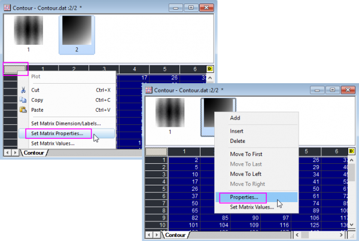

Der Dialog Matrixeigenschaften steuert den internen Datentyp, das Datenformat und die Eigenschaften der Datenanzeige eines Matrixobjekts. Daher kann jedes Objekt in einem Matrixblatt zum Beispiel einen unterschiedlichen internen Datentyp (bestimmt die Speicherzuordnung) besitzen oder Zahlen in einem anderen Format anzeigen.
Um den Dialog Matrixeigenschaften zu öffnen:
Aktivieren Sie das Matrixfenster und wählen Sie Matrix: Eigenschaften setzen im Origin-Menü.
oder
Klicken Sie in die obere linke Ecke der Matrixtabelle, um Eigenschaften der Matrix setzen auszuwählen oder klicken Sie mit der rechten Maustaste auf das Miniaturbild oberhalb des Fensters und wählen Sie Eigenschaften....

Legen Sie die Zellbreite in Einheiten der Zeichengröße fest.
Verwenden Sie die Auswahlliste Anzeige, um zwischen dezimalen, technischen und wissenschaftlichen Anzeigeformaten zu wählen.
| Option | Beschreibung |
|---|---|
| Dezimal: 1000 |
1, 1000, 1E6, 1E9 Der Schwellenwert zur Konvertierung in die wissenschaftliche Schreibweise wird über die Registerkarte Zahlenformat des Dialogs Optionen festgelegt (Einstellungen: Optionen). |
| Wissenschaftlich: 1E3 |
1E0, 1E3, 1E6, 1E9 |
| Technisch: 1k |
1.0, 1.0k, 1.0M, 1.0G Origin unterstützt die technischen Datensuffixe: siehe Tabelle unten. |
| Dezimal: 1.000 |
1, 1.000, 1E6, 1E9 Der Schwellenwert zur Konvertierung in die wissenschaftliche Schreibweise wird über die Registerkarte Zahlenformat des Dialogfelds Optionen festgelegt (Hilfsmittel: Optionen). |
| Suffix | Äquivalent | Menge |
|---|---|---|
| k | Kilo | 10^3 |
| M | Mega | 10^6 |
| G | Giga | 10^9 |
| T | Tera | 10^12 |
| P | Peta | 10^15 |
| m | Milli | 10^-3 |
| u | Mikro | 10^-6 |
| n | Nano | 10^-9 |
| p | Pico | 10^-12 |
| f | Femto | 10^-15 |
|
Hinweis: "u" ist Origins Standardzeichen für Mikro. Die einzige Ausnahme sind Hilfsstrichsbeschriftungen in Diagrammen, in denen "mu" verwendet wird. Außerdem unterstützt Origin 7 nicht die Suffixe "E" und "a". |
Wählen Sie Standard Dezimalstellen, um alle Ziffern in der Matrixzelle so anzuzeigen, wie sie über die Einstellung Anzahl Dezimalstellen der Registerkarte Zahlenformat des Dialogfelds Optionen (Hilfsmittel: Optionen) festgelegt wurden.
Wählen Sie Dezimalstellen setzen =, um die Anzeige der Nachkommastellen festzulegen (überschreibt den Eintrag in der Einstellung Anzahl Dezimalstellen auf der Registerkarte Zahlenformat des Dialogfelds Optionen). Geben Sie die gewünschte Anzahl (n) der Nachkommastellen in das zugehörige Textfeld ein. Dieser Wert legt die maximale Anzahl der nach dem Komma angezeigten Stellen fest. Erfolgt hier kein Eintrag, wird der Standardwert verwendet (5 für Double und 8 für interne Datentypen).
Wählen Sie Signifikante Stellen =, um die Anzahl der angezeigten Stellen festzulegen. Geben Sie die gewünschte Zahl der signifikanten Stellen im zugehörigen Textfeld ein.
Double ist der einzige Datentyp, der fehlende Werte unterstützt, und wird zur Kurvenanpassung und andere mathematische Operationen, für die hohe Genauigkeit erforderlich ist, empfohlen.
| Datentyp | Bytes | Wertebereich |
|---|---|---|
|
Double (Standard) |
8 |
±1,7E±308 (15 Stellen) |
|
Real |
4 |
±3,4E±38 (7 Stellen) |
|
Short |
2 |
-32.768 bis 32.767 |
|
Long |
4 |
-2.147.483.648 bis 2.147.483.647 |
|
Char |
1 |
-128 bis 127 |
|
Byte |
1 |
0 bis 255 |
|
uShort |
2 |
0 bis 65.535 |
|
uLong |
4 |
0 bis 4.294.967.295 |
|
Complex |
16 |
±1,7E±308 (15 Stellen), alle 8 Bytes |
Aktivieren Sie dieses Kontrollkästchen, um die Einstellungen in der Gruppe Optionen auf alle Matrixobjekte rechts vom aktuellen Matrixobjekt im Matrixblatt anzuwenden.